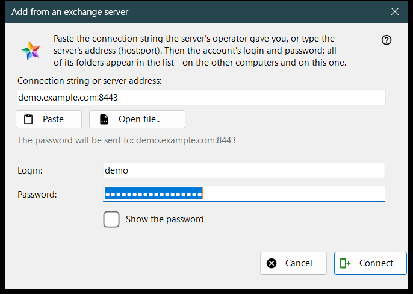
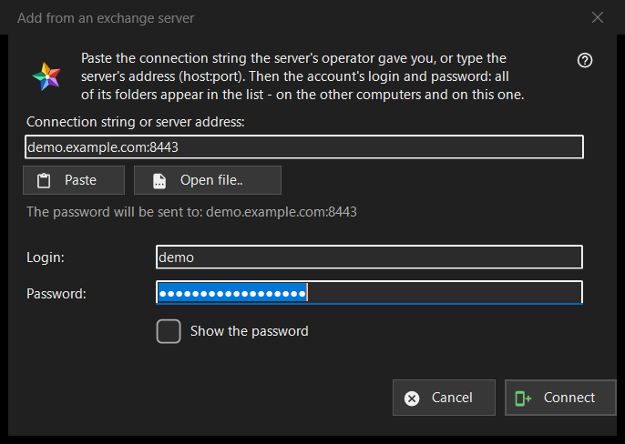

Add from an exchange server
What this is for
Connects this computer to an account on an exchange server, so that the folders of all the devices of that account appear in the resources list. It opens from the «Add from an exchange server..» button in the «My devices» section of the resources list, and when you drop a connection string or file on the viewer or type one in the folder box.


In this order
- Paste the connection string from the server's operator, type the address as host:port, or press «Open file..».
- Check the line «The password will be sent to: ..»: that address is the only place the password goes.
- Enter the login and the password.
- Press «Connect».
- If the program asks about the server's certificate, compare the fingerprint with the one the operator named.
The elements
Connection string or address
The first box takes a connection string (it starts with FMSEXCH1:) or an address as host:port. «Paste» fills it from the clipboard, from text or from a picture of a QR code, and «Open file..» reads a .fmsexch file or a QR picture. Pasting only fills the form: nothing is sent until you press «Connect». The line under the box shows where the password will go; a web address, a folder code or a damaged string is refused there in plain words.
Login and password
«Login:» is filled from the string when it carries one. «Password:» is masked; «Show the password» reveals it. When you press «Connect», the password boxes are cleared before the first byte leaves the computer. The status line shows the progress and, on failure, the reason: a login or password that did not fit, too many attempts, a server that does not answer.
An invitation string
A string that is an invitation already names the server and switches the window to creating an account: «Password once more:» and a note on the password rule appear (at least 10 characters, with an upper-case and a lower-case Latin letter and a digit), and the button reads «Create the account». The server has the last word on the rule.
The server's certificate
If the certificate is unknown, a question shows its fingerprint and asks whether to trust the server and remember it; the default answer is No. If the string names a fingerprint and the server presents another one, both are shown, nothing is remembered and no password is sent.
Signing in again
Opened for an existing server entry to sign in again, the window shows the address and the login read-only, and the fingerprint that entry remembers is the anchor of trust.